曾鑫：希望我下次见到你的时候球技有所增长，一起打giu
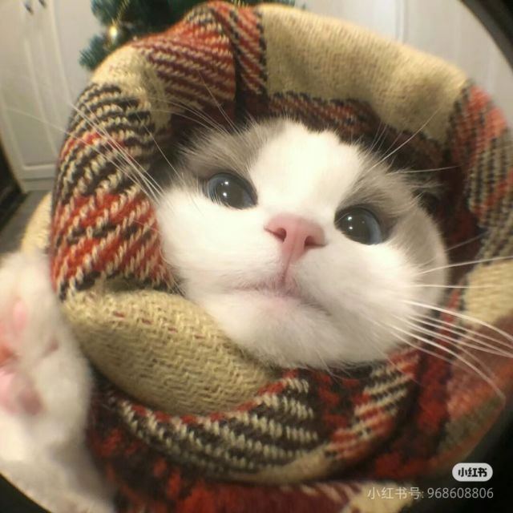 陈琳：很开心能和你做了三年的初中同学，虽然没一起做高中同学， 但是从别人口中听说你在海侨成绩越来越好了，也认为你做的选择非常正确！ 高考后听说你考去了华科，特别厉害！也很巧又来到了同一座城市！ 也很感谢你在前段时间我被伤害的时候理解我安慰我！希望你天天开心
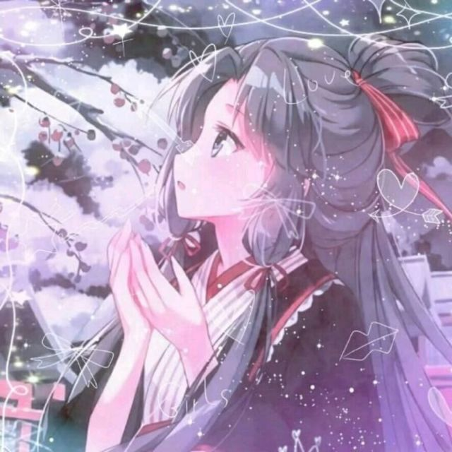 程凯：哥弟想你了。你是一个一个一个肥肠肥肠好的哥弟， 跟你相处从来不觉得有不舒服的感觉，不管什么话题总能聊的起来，情商还高， 对人又真诚，对人对事对物都很负责。好人卡一张
邓宇童：你是一个很阳光且有趣的男生， 很开心之前我们能有机会在一个班一起度过很宝贵的初中三年， 希望你以后越来越好！我们438一定有机会再聚
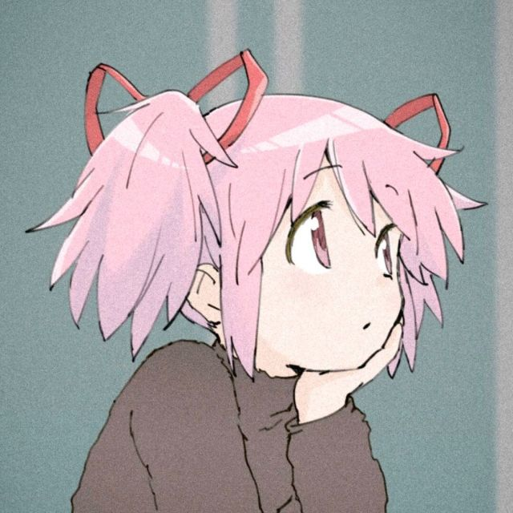 永远怀念晚修后在宿舍走廊共同看到的的那份月光～
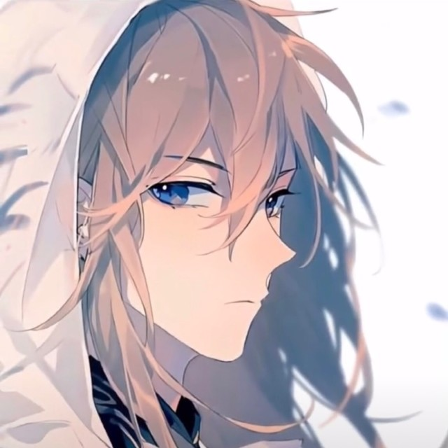 李长昕：我的同桌实力超群，还帅，并且台打的比老汤好
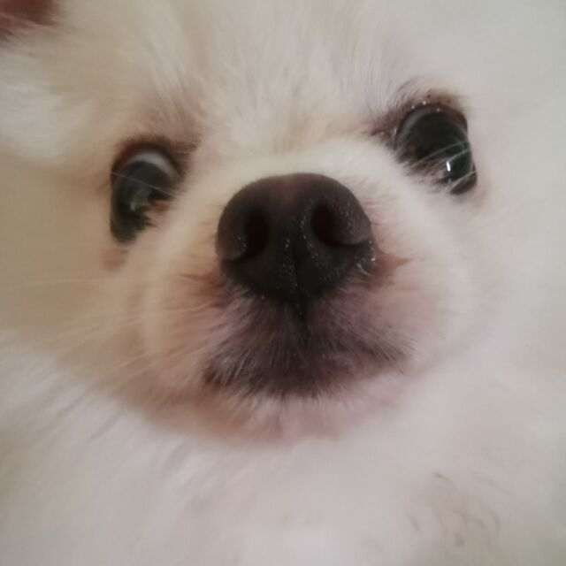 林师凡：陈虞林，第一次听说你是当时听说七班有个肖战， 当时觉得你应该是一个很抽象的人。后来我考进实验班， 估计是有什么莫名的吸引力我们就认识了，虽然我也忘了是怎么认识的， 你的确是一个很随和的人， 让我印象最深的是我们高三某次生物考试前我们一起在做历史题，而不是复习生物， 眨眼间高中三年就过去了，我们也步入大学，祝你在华科一切都好， 记得教我打羽毛球
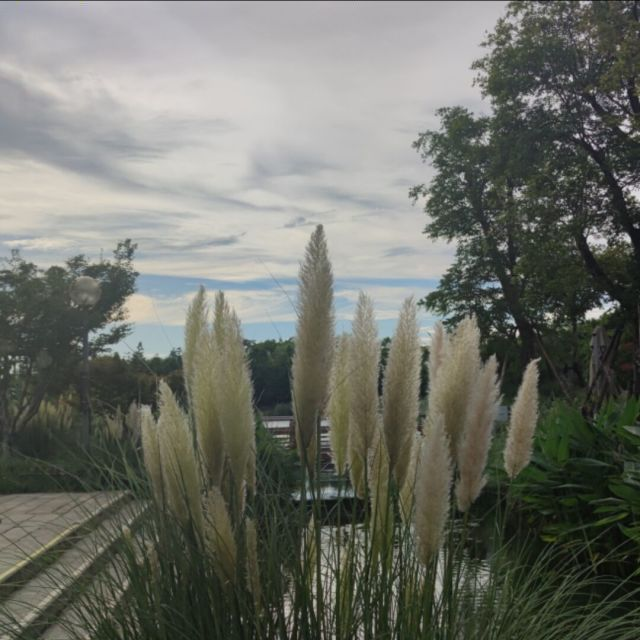 宋仲轩：阳光帅气大男孩
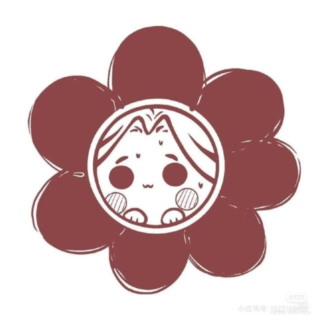 孙荞：会学会玩的同学！祝前程似锦
佟乐：我喜欢你
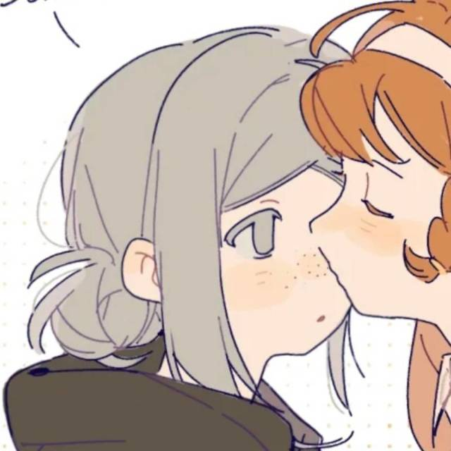 王德毅：念念不忘必有回响，放下顾虑大胆去闯
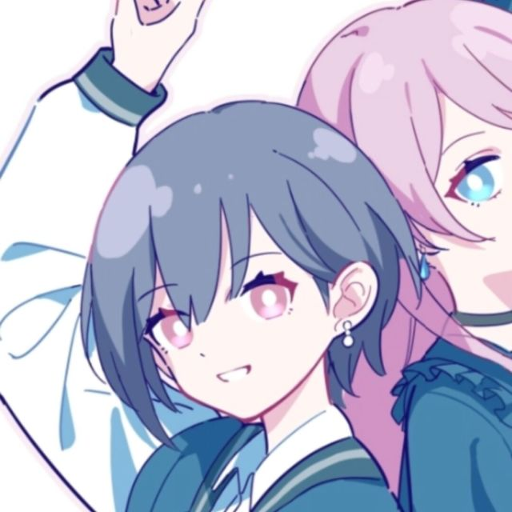 王涵：我记得高一高二上基本都和你没什么交集，后来以强哥为纽带和你渐渐熟络。 就兴趣爱好而言，我们的共同话题不算很多。但我总觉得和你聊天很有意思， 大概因为你是我见过为数不多会和人敞开心扉聊天聊地聊生活的那种人吧。 在这里顺便夸夸强哥，在有你和强哥的时候，生活总是充满惊喜感和仪式感， 当然最多的是松弛感（不过对我来说没什么不好）。想你了，小战。
王和天：还想听你在宿舍唱JayChou， 还想跟你一起去吃意面，还想给你打二传，还想听你说下笔
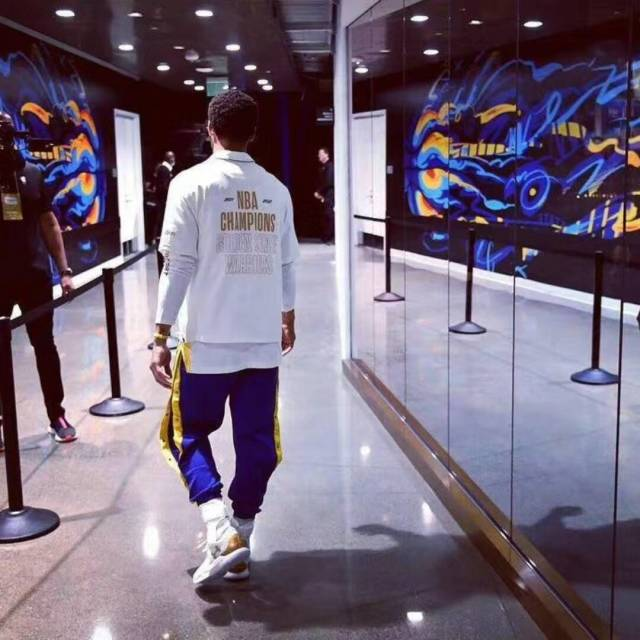 王瑞东：爱yL是你我的谎言
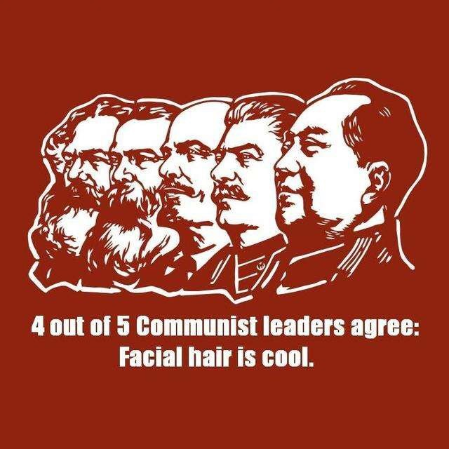 为什么不记得我😭为什么不记得我😭为什么不记得我😭为什么不记得我😭 为什么不记得我😭为什么不记得我😭为什么不记得我😭为什么不记得我😭 为什么不记得我😭为什么不记得我😭为什么不记得我😭为什么不记得我😭 为什么不记得我😭（）
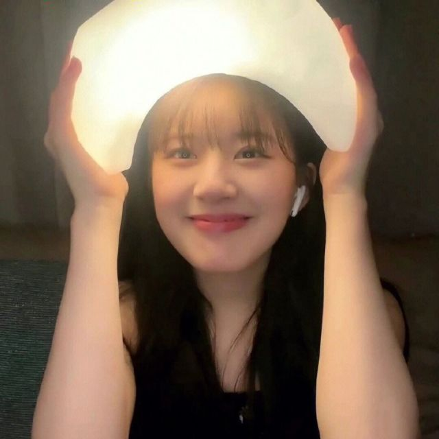 王妍：祝符宝宝和陈思甜福如东海，寿比南山，幸福美满，万事如意，心想事成，事事如意
王彦骁：我的好兄弟肖战，认识你已经三年了。从到十班开始， 我们就建立了深厚的友谊，怀念我们的高中时光，怀念我们一起去外面吃饭， 一起打篮球，一起打giu，一起吃伊面，一起回宿舍，更怀念的是与你在宿舍畅谈 。时间过得真快，虽然你我分别在遥远的武汉和北京，但漫天风雨难阻， 真挚友情不移。愿你我前程似锦，做一辈子的好兄弟！
叶兴辉：我觉得你是一个很有个性的人，理性中有感性，而且每次讲到yl都会非常激动， 但是呢学习成绩又很好，还喜欢叫mm来农吗
游鲤胜：虽然初中没有带抹布，但你一直是一条靠谱的鲈鱼，希望以后的日子能共同进步
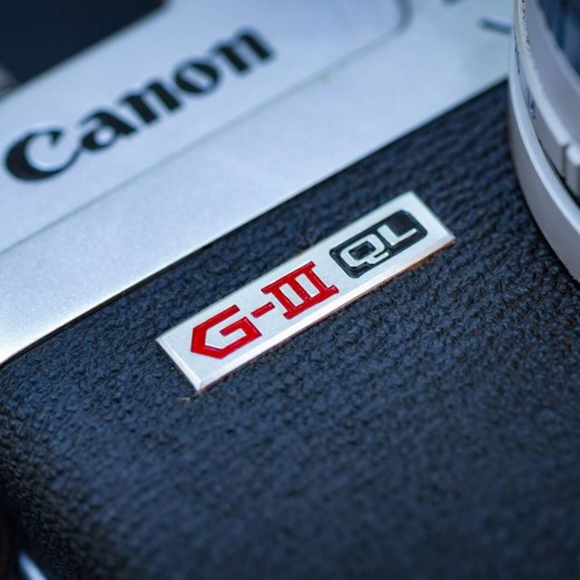 张一丁：战好久不见！请原谅我完全不记得何时认识你，只记得是因为当时你的外号叫得实在太响（手动狗头）。 你给身边的人带来了很多欢乐，在遇上正经问题时也很靠得住，确实是抽象和具体的集大成者。时至今日，我有时仍然习惯性地说一些“战言战语”。虽然能听懂的人最近也相隔几百公里，但它确实是指代我高中生活的符号和纪念品之一，让我回忆起和兄弟们在一起的时光。 实在没什么文化，不知道说些什么，祝永远阳光，永远热爱！ bbbbbbbbbang！
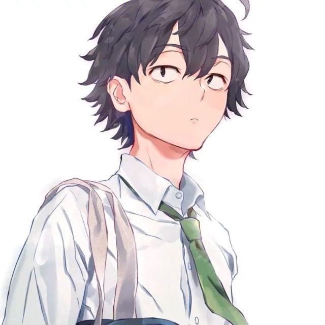 庄文哲：肖战天下第一帅，守护全世界最好的陈虞林， 游戏全能王，篮球高手，大学霸，你的光芒太耀眼，又让我自卑了
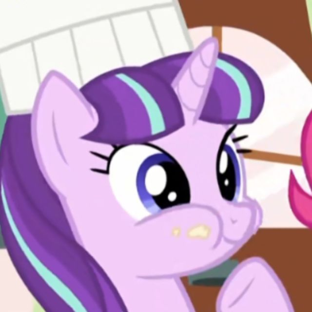 真的希望你多多开心呀，能安顿好自己，不管是肉体还是内心，能够在当下的生活中找到归宿 忙碌但不焦虑地充实地活着，虽然这并不容易，但相信你可以的！ （我答应豆老师我一定可以的）
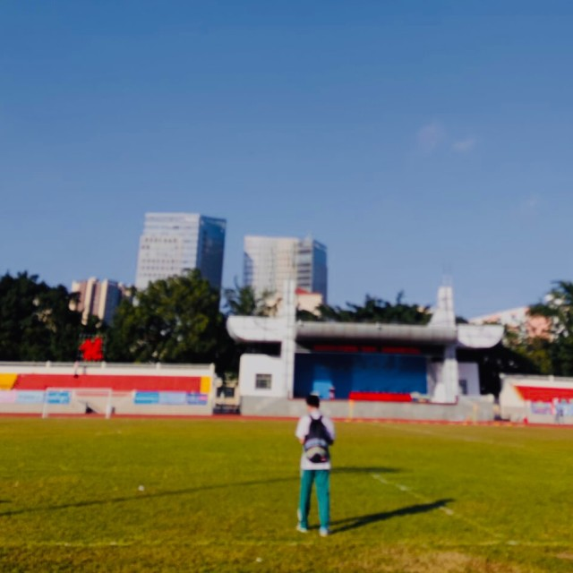 韩霖：很可惜我们没能共度整整三年时光，但很幸运高一下学期就分到了一个班。你阳光，开朗，和我兴趣相似， 很难在你身边不开口和你聊上两句。无论什么事你总是站在兄弟这边， 总是跟兄弟一起，嘴上挂着的兄弟可真是实实在在，期待一月的海南， 期待和你一起在球馆征战彻夜！
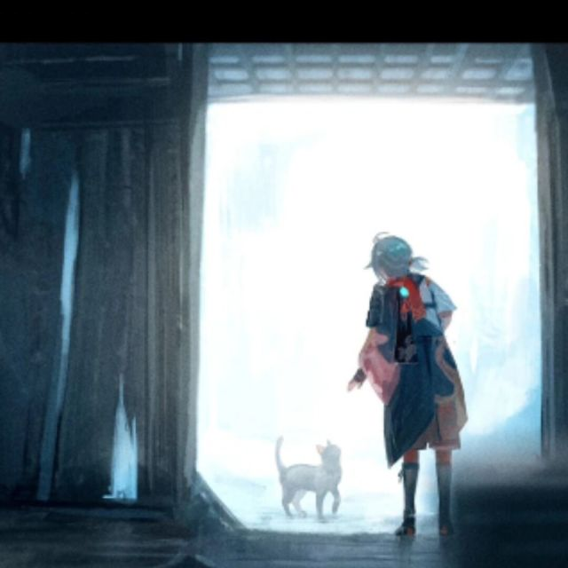 黎秉瑞：秋日浮于载笔 如今京城 寒风凛冽 有时曾想起 装着我们酸甜苦辣的玻璃球 它被时间碾碎 而回忆 一次又一次缝缝补补 如今 我来细细珍藏 玻璃球遍是雪花彩带 晃一晃 是你端起的红酒杯 是你端坐的木板床 满面春风 皆是农活的快乐 更看得见 篮球架下你的义愤填膺 雪花亮亮地 映在彩带上 隐隐约约 还有灌袋时的浅笑 和开蒙后摊平的双手 不止一次看见过 你的愤懑 和忧愁 但 爽朗的笑 又是那么盎然 消弭抑郁 恍如 枯木逢春 武汉有不烈的风 但晚上也会变冷 树叶会落 不过 机械般转动的生活 我相信 也压不垮 你热忱的朗笑 就像来年的早樱 我会擦拭珍贵的回忆 也愿 春山长青 秋绥冬禧
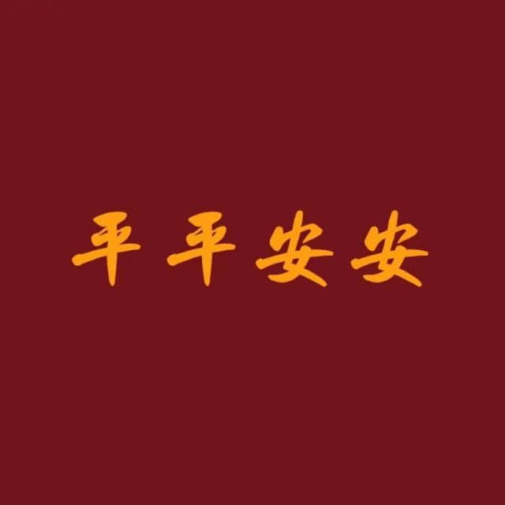 陈子扬：甜美 篮球 侨中小学霸
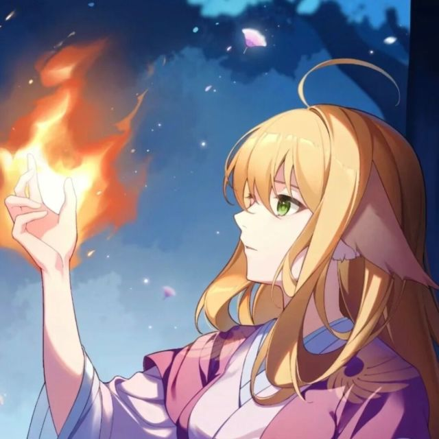 陈冠侨：你是一个坦诚、帅气的男孩，真情而富有魅力。高中三年，和你相处得很愉快，希望你以后能百尺竿头、更进一步！加油，骚年
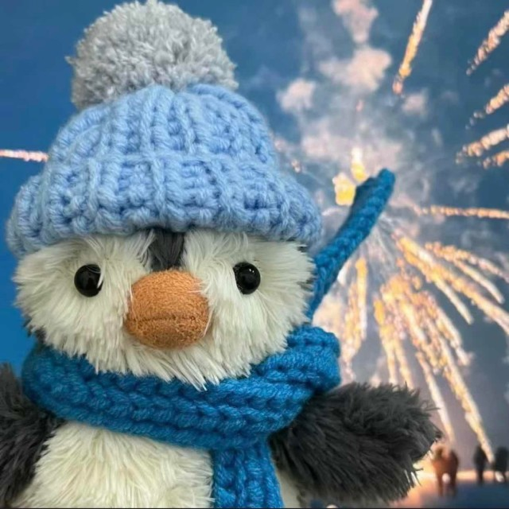 盖于陶：乐观善良的肖战，怎能不爱
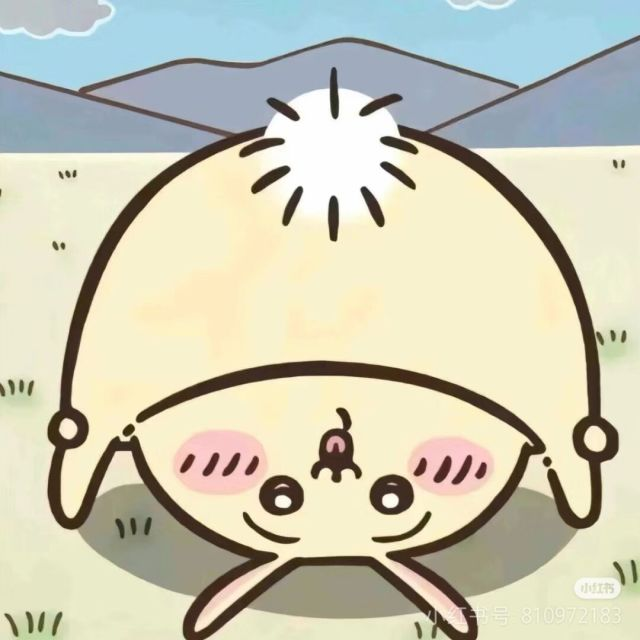 王雅薪：有幸和肖战做了两年半的高中同学呀~你给我的感觉就是一个真诚善良、内心柔软的男生，并且你非常的温暖乐于助人哈，很高兴能认识你！祝你一直幸福下去！